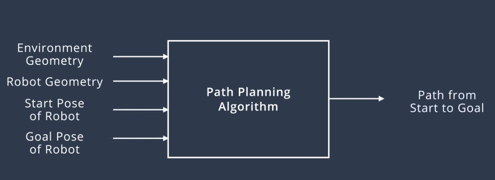

Introduction to Path Planning
Path-planning is an important primitive for autonomous mobile robots that lets robots find the shortest or optimal path between two points.
Path-planning requires a map of the environment and the robot to be aware of its location with respect to the map.

Terminology
Complete - An algorithm is complete if it is able to find a path between the start and the goal when one exists.
Optimal - An algorithm is optimal if it is able to find the best solution.
Approaches to Path Planning
Discrete (or combinatorial) path planning
Discrete planning looks to explicitly discretize the robot's workspace into a connected graph, and apply a graph-search algorithm to calculate the best path. This procedure is very precise (in fact, the precision can be adjusted explicitly by changing how fine you choose to discretize the space) and very thorough, as its discretizes the complete workspace. As a result, discrete planning can be very computationally expensive - possibly prohibitively so for large path planning problems.
The image below displays one possible implementation of discrete path planning applied to a 2-dimensional workspace.

Discrete path planning is elegant in its preciseness, but is best suited for low-dimensional problems. For high-dimensional problems, sample-based path planning is a more appropriate approach.
Sample-based path planning
Sample-based path planning probes the workspace to incrementally construct a graph. In stead of discretizing every segment of the workspace, sample-based planning takes a number of samples and uses them to build a discrete representation of the workspace. The resultant graph is not as prcise as one created using discrete planning, but it is much quicker to construct because of the relatively small number of samples used.
A path generated using sample-based planning may not be the best path, but in certain applications - it's better to generate a feasible path quickly than to wait hours or even days to generate the optimal path.

Probabilist path planning
While the first two approaches looked at the path planning problem generically - with no understanding of who or what may be executing the actions - probabilistic path planning takes into account the uncertainty of the robot’s motion.
While this may not provide significant benefits in some environments, it is especially helpful in highly-constrained environment or environments with sensitive or high-risk areas.